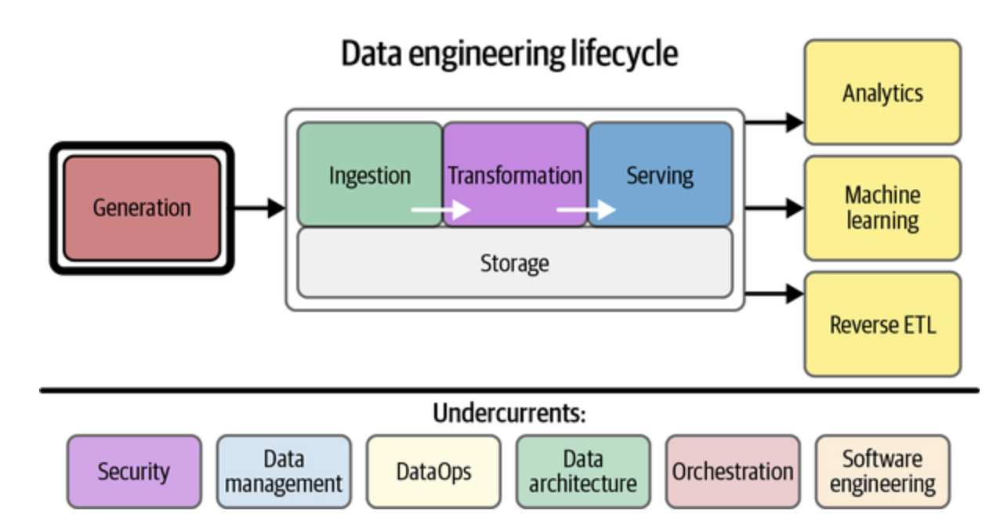

Data Engineering 101
Data engineering focuses on the practical aspects of data collection, data transformation, and data storage, preparing data for analytical or operational use.

Introduction to Data Engineering
Data engineering is a vital field in the landscape of data analytics and science. It lays the foundation for all data operations, from collecting and storing to processing and using data.
What is Data Engineering?
- Primary Focus: Data engineering prepares data for analytical or operational use, emphasizing the practical application of data collection, transformation, and storage.
Roles and Responsibilities
As a data engineer, you will be responsible for:
- Building and maintaining the infrastructure for data generation, collection, and distribution.
- Developing robust and scalable data pipelines that transform and transport data across systems.
- Ensuring data is readily available and in a usable format for analysts and data scientists to perform their tasks.
Skills and Tools for Data Engineering
To thrive in data engineering, you will need to develop skills in:
- Programming: Become proficient in languages like Python, Java, or Scala.
- Data Management & Governance: Learn to manipulate databases using SQL.
- Data Processing Frameworks: Gain expertise in tools such as Apache Hadoop and Apache Spark.
- Data Storage and Warehousing: Understand how to implement and manage large-scale data storage solutions.
The Data Engineering Lifecycle
Understanding the Data Engineering Lifecycle is crucial for managing data effectively:
- Generation: Where and how data is produced.
- Ingestion: Moving data to a place where it can be used.
- Transformation: Converting data to a useful format.
- Serving: Making data accessible for use.
- Storage: Keeping data safe and retrievable.
Outcomes of the Data Engineering Process
The end goal of data engineering can be one of the following:
- Analytics: Deriving insights that inform business strategies.
- Machine Learning: Training models to predict and act upon data.
- Reverse ETL: Integrating processed data back into operational systems.
Supporting Practices in Data Engineering
These are the undercurrents that ensure the data flows smoothly throughout the lifecycle:
- Security: Protecting data integrity and privacy.
- Data Management: Ensuring that data is organized and maintained properly.
- DataOps: Streamlining the collaboration between teams working with data.
- Data Architecture: Creating the blueprint for data collection and usage.
- Orchestration: Automating processes and workflows.
- Software Engineering: Developing the applications that handle data.
Becoming a data engineer means you’ll be at the intersection of data, technology, and business, ensuring that data is a valuable asset that can be leveraged to its full potential.
Career Opportunities with Data Engineering Skills
Data engineering skills can lead to diverse career paths. Here are some potential titles and roles:
Alternative Careers
- Data Analyst: Analyzes data to help inform business decisions.
- Machine Learning Engineer: Creates algorithms to predict patterns and behaviors.
- Database Administrator: Manages and maintains database systems.
- Business Intelligence Analyst: Converts data into actionable business insights.
- Data Architect: Designs and manages data solutions.
- Data Science Generalist: Handles various data-related tasks in smaller companies.
- Systems Analyst: Improves IT systems through data analysis.
- Product Manager: Integrates data insights into product strategy.
- Operations Analyst: Optimizes business operations using data.
- Quantitative Analyst: Applies data to financial analysis and risk assessment.
Advantages of Data Engineering Skills Beyond Data Roles
- Enhanced Problem-Solving: Develops structured approaches to solving complex issues.
- Logical Thinking: Fosters a logical mindset beneficial for strategic decision-making.
- Technical Skills: Provides technical acumen applicable in many modern tech roles.
- Data Literacy: Equips with the ability to understand and use data effectively.
- Project Management: Aligns with managing projects, resources, and workflows.
- Effective Communication: Improves the ability to communicate complex ideas clearly.
- Adaptability: Prepares for quick adaptation to industry changes.
- Automation Knowledge: Offers insights into streamlining and automating processes.
- Interdisciplinary Collaboration: Encourages working across various teams and departments.
Learning data engineering skills can significantly enhance your analytical and technical capabilities, useful in a wide array of professions, not limited to traditional data-centric roles.